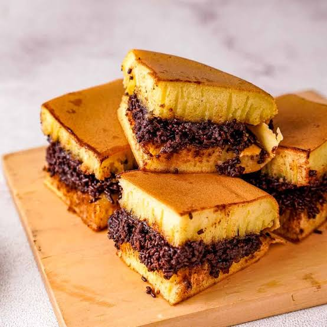

Martabak

Martabak is a stuffed pancake or pan-fried bread made with 10 times the lard and you’ll be somewhat close to imaging martabak. In Indonesia, the Murtabak is one of the most popular street foods. The sweet version looks more like a pancake filled with gooey chocolate, peanuts or cheese, while the savory one is made from crispy pulled pastry like filo that is flattened in a wok as egg and minced meats are rapidly folded in. Served with pickled cucumber and a sweet and sour vinegar.
Ingredients
- 300g plain flour
- 1/2 tsp baking powder
- 12g dry yeast
- 50g sugar
- 4 eggs(Do NOT use eggs that are directly taken from refrigerator.)
- 500ml evaporated milk
- 3 tbsp full cream milk powder
- 2 tbsp margarine
- Condensed milk (Chocolate or Vanilla)
- Chocolate sprinkles
- Cheddar cheese, shredded
- White sugar (optional)
Steps
- Warm the evaporated milk up but do NOT boil it.
- While waiting for the evaporated milk to get warm, you can put all the ingredients in a bowl except the margarine.
- Pour the warm evaporated milk to the container and start whisking until the ingredients get mixed perfectly. Don’t worry if there is a little residue left.
- Melt the margarine on a pan.
- Take another bowl and use a sieve to separate the fine mixture from the residue. TIP: the container must be quite large as the mixture will expand later on.
- Pour the melted margarine to the fine mixture that has been sifted. Stir slowly for a while to mix the margarine.
- Let the fine mixture rest for 30 minutes. It’s important that you do not touch the mixture during this process since it may damage the yeast.
- After 30 minutes, heat up a frying pan at low heat and grease it well with margarine.
- Pour the mixture to the frying pan. The amount of the mixture depends on your preference.
- You can cover the frying pan with aluminium foil if you want to.
- Wait for it to be cooked until it is firm.
- Move it onto a plate and it’s ready for decoration.
- Spread the chocolate sprinkle and followed by the shredded cheese. After that, pour the condensed milk on top of other toppings.
- Cut the Terang Bulan into half and fold it.
- You can spread a bit of margarine on top of the Terang Bulan to moist the surface.
- Cut in small pieces and enjoy!
recipes